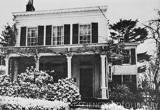

Ông rất hồn nhiên, yêu trẻ và thanh niên.
Hồi ở Princeton, một đêm Noel, một đám trẻ trai gái lại hát trên bồn cỏ trong vườn ông. Ông nghe xong rồi hỏi các em:
- Các cháu có chịu bác ôm cây vĩ cầm đi theo các cháu không?
Chúng đồng thanh đáp:
- Chịu, chịu.
Thế là ông khoác thêm chiếc áo bằng da, chụp cái mũ nồi lên đầu, xách cây vĩ cầm nhập bọn với chúng. Có một vĩ nhân nào dễ thương như vậy không?

Ngôi nhà số 112 Mercer Street ở Princeton, New Jersey, Hoa Kì
Einstein sống trong ngôi nhà này từ 1935 cho đến cuối đời
Trẻ em mà lại thăm ông thì ông bao giờ cũng vui vẻ tiếp đón. Một hôm một em gái nhỏ lại xin ông giải cho một bài toán. Khi em về rồi, bà trách ông:
- Nhiều khi mình coi thì giờ của mình không quan trọng gì cả.
Ông mỉm cười, đáp:
- Em ấy sẽ trả công anh một cách xứng đáng, lấy tiền túi ra mua cho anh cục kem.
Một em gái khác táo bạo hơn, hễ gặp bài toán nào khó cũng lại xin ông gà cho. Má em hay vậy, lại xin lỗi ông. Ông bảo:
- Bà và cháu khỏi phải xin lỗi tôi. Tôi nói chuyện với cháu, có lợi cho tôi hơn là có lợi cho cháu.
Một nam sinh trung học, trình độ đệ lục của ta viết thư xin ông giải cho một bài toán về đường tiếp xúc với một hình tròn. Ông vẽ hình, chứng minh cho, rồi kí tên: A.E. gởi cho.
Những sinh viên được học ông đều quí mến ông. Hans Tanner, môn đệ của ông từ 1911, viết về ông như sau:
“Khi thầy Einstein lần đầu tiên vô giảng đường, áo sờn, quần ngắn quá, chiếc dây đồng hồ bằng sắt, anh em chúng tôi hoài nghi quá.
“Nhưng cách giảng của thầy làm cho tấm lòng sắt đá của chúng tôi phải cảm động. Thầy chỉ ghi những điểm quan trọng trên một miếng giấy nhỏ bằng tấm danh thiếp. Bài giảng từ trong óc trực tiếp phát ra, thành thử chúng tôi biết cách suy nghĩ của thầy ra sao, như vậy thích thú hơn là những bài giảng đã nghĩ sẵn, gọn, không có lỗi hành văn của các thầy khác (…) Mỗi khi không hiểu một điểm nào thì chúng tôi có thể ngắt lời thầy được (…) Đôi khi thầy thân tình, thẳng thắn nắm lấy cánh tay của một sinh viên để giảng cho một điểm trong bài, như nói chuyện với một người bạn”.
Buổi chiều, giờ tan học, Einstein thường hỏi: “Nào có ai muốn ra tiệm cà phê với tôi không nào?” Thế là thầy trò kéo nhau ra tiệm, vừa đi vừa bàn về các vấn đề khoa học hoặc xã hội. Có lần thầy trò ngồi với nhau tới khi tiệm cà phê sắp đóng cửa mà vẫn chưa hết chuyện, thầy kéo trò về nhà nói chuyện tiếp.
Ông thường khuyên môn đệ của ông phải kiên nhẫn, kiên nhẫn, nếu tìm tòi, suy nghĩ hoài mà không ra thì cũng nên mừng vì “đã bắt thiên nhiên phải thách đố mình rồi”. Một sinh viên phàn nàn rằng mất năm giờ mới tìm ra được chỗ lầm trong bài toán, ông mỉm cười bảo: “Đã thấm gì đâu”.
Ông thú thực với một nhà báo: “Tôi suy nghĩ, suy nghĩ cả tháng, cả năm. Một trăm lần thì tôi suy luận sai tới chín mươi chín lần. Tới lần thứ một trăm may mà đúng”.
Nhà báo đó hỏi thêm:
- Theo giáo sư thì có công thức nào để thành công?
Ông hóm hỉnh đáp:
- Cho x là sự làm việc, y là sự tiêu khiển, a là sự thành công. Công thức của tôi là: a = x + y + z.
Nhà báo ngạc nhiên:
- Thế còn z là gì?
Ông mỉm cười:
- Là biết làm thinh.